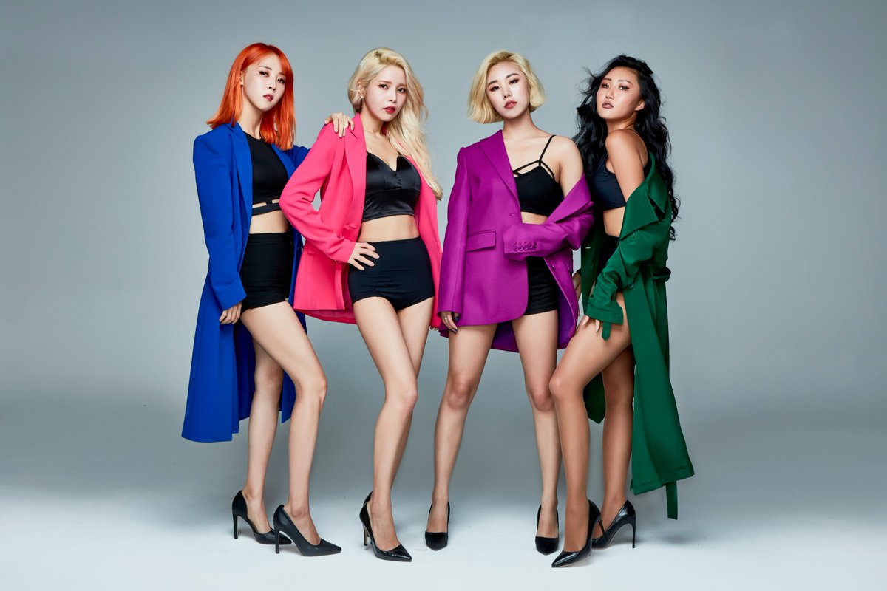

Mamamoo (Korean: 마마무), sometimes stylized as MAMAMOO,is a South Korean girl group formed by RBW (formerly WA Entertainment) in 2014. 
The group officially debuted on June 19, 2014 with the single "Mr. Ambiguous".
Their debut was considered by some critics as one of the best K-pop debuts of 2014.
They are recognized for their retro, jazz, R&B concepts and their strong vocal performances.